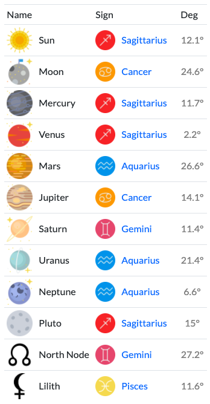

sagitariussss bud
today is ur birthday. so here is the most sick, dope, fire, and lit birthday card u'll ever seen,, be prepared to get SNATCHEDDDD!!
[note: believe me, no one can wish u a better happy birthday than me]
here's ur natal chart
"what's a natal chart???" A natal chart is a snapshot of the sky at the moment you were born. In essence, at the moment of your first breath is when you come into accord with the energies of the universe. That remains fixed throughout your lifetime. Your natal chart gives clues to your major life lessons, shows your destiny, reveals your personality traits and hidden desires, as well as points the way to your soul’s purpose.

"oh no but theres no way everyone r experiencing the same situation in the same particular time" honey,, thats called horoscope the astrology u know is only on the surface now lets repeat after me:
astrology isn’t fortune telling
astrology isn’t fortune telling
astrology isn’t fortune telling
"ou but i still think astrology is stupid"
oop,,,, well keep that to urself das embarassing
now lets we move on :D
shall we?